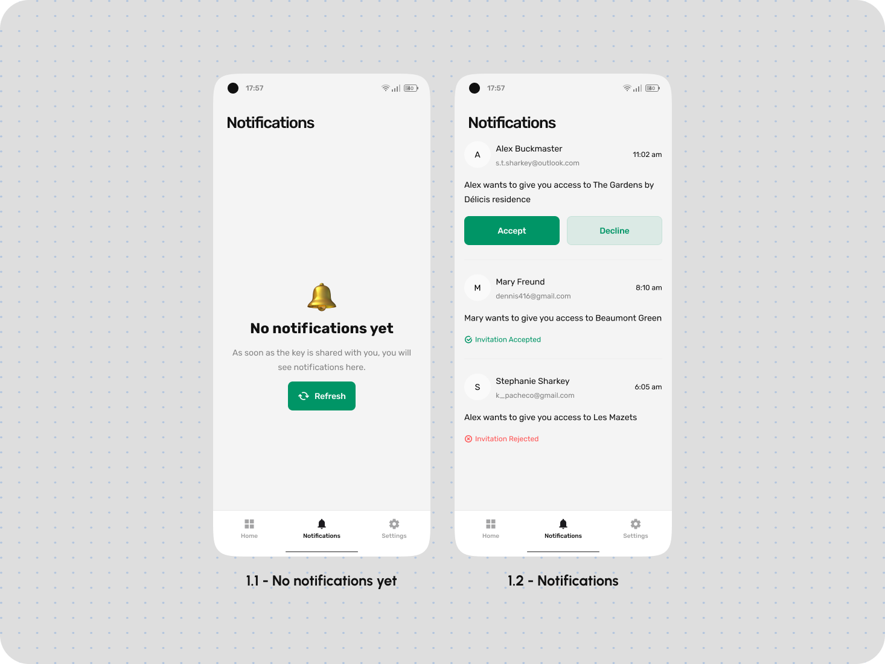

About Omyki
Omyki - Your Ultimate Remote Key Solution Omyki is a cutting-edge application designed to simplify your daily access control needs. With Omyki, you can effortlessly manage various key cards, from office access to parking lots and gyms, all from the convenience of your smartphone. But Omyki takes it a step further. It empowers you to control multiple access points within a single location, making your life easier and more secure.
Task
Simplify Access Control The task at hand for Omyki is to revolutionize the way you manage your keys. No more juggling physical cards or fobs for different access points. Omyki streamlines this process, putting all your access control in one place, eliminating clutter and confusion.
Problem
Access Fragmentation and Inefficiency The problem Omyki addresses is the fragmentation and inefficiency of traditional key card management. Users often find themselves fumbling through a stack of cards or dealing with multiple access apps for a single location with various access points. This can lead to wasted time and potential security risks.
Decision
Smart Access Management Our decision is to provide you with a seamless and intelligent solution. Omyki combines all your key cards into a single digital interface, allowing you to easily switch between different access points at the same location. Whether it's different office doors or various areas within a gym, Omyki offers a unified experience for controlling them all.
Prototype
Sign In

Sign Up


Keychain
Settings
Notifications
Other screens

Conclusion
Elevate Your Access Control Experience In conclusion, Omyki is your answer to modern access control challenges. Say goodbye to the hassle of traditional key cards and multiple apps. With Omyki, you have the power to manage all your keys in one place, enhancing convenience and security. Embrace the future of access control with Omyki - the ultimate remote keys/smart keys app.